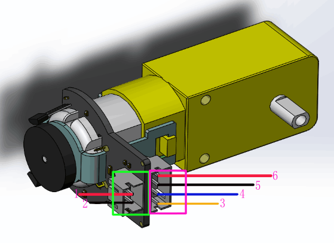

Motors, Wheels and Encoders
Robot propulsion is based on two DFRobot geared motors with encoder. Each motor has a 120:1 gearbox and an integrated quadrature encoder that provides a resolution of 8 pulse per shaft rotation round giving a maximum output of 960 within one wheel round.
The motors drive 2 wheels with soft rubber tiers. To stabilize the robot, we use a ball caster that support rotations in 360 degrees.
Outline
FIT0450 DFRobot Micro DC geared motor with encoder
- Gear ratio: 120:1
- No-load speed @ 6V: 160 rpm
- No-load speed @ 3V: 60 rpm
- No-load current @ 6V: 0.17A
- No-load current @ 3V: 0.14A
- Max Stall current: 2.8A
- Max Stall torque: 0.8kgf.cm
- Rated torque: 0.2kgf.cm
- Encoder operating voltage: 4.5~7.5V
- Motor operating voltage: 3~7.5V (Rated voltage 6V)
- Operating ambient temperature: -10 ~ +60 degrees C
- Motor Dimension Drawing (PDF)

Encoder
The encoder relies on two Hall sensors. Sensors generate puluses several times per revolution of the motor shaft.
- 8 pulses per motor shaft revolution
- 960 pluses maximum per wheel revolution
External Links
Wheels
- Diameter: 65 mm
- Thickness: 26 mm
- GoTronic Product Info
Ball Caster
- Dimensions: Ø 23 x 21 mm
- Ball diameter: 3/4 inches = 19.05 mm
- Weight: 30 g
- GoTronic Product Info